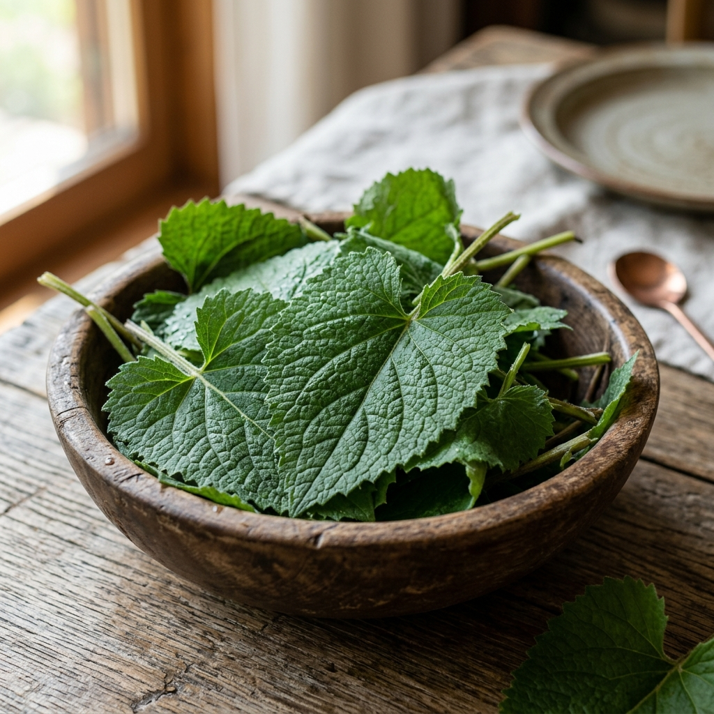

DMZ 경제순환센터 방문
양구 지역 창업 생태계와 지역 특산물을 연계한 아이디어 상품들을 구경하며 여행을 시작합니다.
숨 쉬는 자연, 감동이 있는 문화 관광의 중심지로 여러분을 초대합니다.
아름다운 양구의 모습을 생생하게 감상해보세요.
사계절 내내 즐거움이 가득한 양구의 축제에 참여하세요.
국토의 정중앙, 한반도의 배꼽 양구에서 열리는 가장 신나는 여름 축제. 다채로운 공연과 체험행사, 그리고 시원한 물놀이가 기다립니다.
봄 내음 가득한 명품 곰취를 맛보는 시간
청정 펀치볼 시래기와 일교차가 만든 꿀사과의 특별한 만남
파로호 맑은 물에서 즐기는 짜릿한 손맛
깊은 산속의 향을 그대로 머금은 청정 양구의 명품 곰취를 소개합니다.

양구 곰취는 해발 600m 이상의 고산지대에서 자라나 독특한 향과 쌉싸름한 맛이 일품입니다. 동의보감에도 기록될 만큼 영양이 풍부하여, 봄철 입맛을 돋우고 피로를 해소하는 데 으뜸인 웰빙 식품입니다.
대암산과 펀치볼 등 일교차가 크고 맑은 바람이 부는 청정 환경에서 자라 잎이 부드럽고 향이 깊습니다.
비타민 C와 베타카로틴, 칼슘이 풍부하여 면역력 강화, 피로 해소, 혈액 순환 및 항암 효과가 뛰어납니다.
신선한 쌈채소는 물론, 향긋한 곰취 쌈밥, 두고두고 먹는 곰취 장아찌, 고소한 곰취전 등으로 다양하게 즐길 수 있습니다.
자연이 주는 특별한 선물, 야생화 원료를 체험해보세요.


해안야생화공원 또는 전문화훼농가 청정한 환경에서 재배된 야생화를 일상생활에 유용하게 사용하시도록 원료를 개발하고 제공하며 현재는 화장품과 식재료 원료로 제공되고 있습니다.

고급 화장품 원료와 청정 야생화 추출물을 활용하여 내 피부에 맞는 나만의 화장품을 만들어 가실 수 있는 체험을 시행하고 있습니다. 저렴한 가격의 체험이지만 원료 소재 만큼은 고급원료만을 사용하고 있으며, 운영 기간에 체험 시간 내에 방문하시면 언제든지 체험을 하실 수 있습니다.
사과와 딸기 등 양구의 맑은 자연이 키운 신선한 농산물을 직접 수확해보세요.
양구의 다채로운 명소들을 지도로 먼저 만나보세요.

DMZ 경제순환센터부터 박수근 어린이미술관까지, 시간별·목적별 완벽한 여행 일정을 확인하세요.
양구 지역 창업 생태계와 지역 특산물을 연계한 아이디어 상품들을 구경하며 여행을 시작합니다.
시내에서 양구 명물 시래기 닭갈비 등 든든한 점심 식사.
아이들의 눈높이에 맞춘 체험 프로그램과 박수근 화백의 따뜻한 시선이 담긴 작품 감상.
아름다운 파로호 상류의 한반도 지형 인공섬에서 해질녘 여유로운 힐링 산책.
민간인 통제구역 내 원시 자연의 비경을 간직한 두타연 계곡 트레킹.
우리나라 중심에서 우주의 신비를 배우고 실내 전시 관람 후 귀가.
(매월 5, 10, 15, 20, 25, 30일) 활기 넘치는 장터에서 양구 특산물 구경 및 먹거리 즐기기.
양구 백자의 우수성을 알아보고 도자기 만들기 공방 체험 참여.
계절마다 다른 꽃들이 만발하는 수목원과 신기한 생태관 탐방.
시내와 가까운 꽃섬에서 인생 사진을 남기며 여행 마무리.
넓은 양구 지역을 개별 버스로 다니기엔 제약이 많습니다. 춘천역에서 출발하는 양구 시티투어 버스(금,토,일 운영)를 예약하시면 박수근미술관, 두타연, 펀치볼 등 주요 핵심 관광지를 가장 편리하고 저렴하게 둘러볼 수 있습니다.
양구 시외버스터미널 도착 후, 파로호 꽃섬이나 양구 5일장, DMZ 경제순환센터 등은 읍내에서 가깝기 때문에 도보나 단거리 택시 이동을 추천합니다.
외곽 명소(수목원, 박수근미술관)로 향하는 농어촌 버스는 배차 간격이 넓습니다. 반드시 양구군청 교통정보 홈페이지나 터미널에서 시간표를 확인하고 움직이셔야 하며, 귀가 버스 시간도 미리 체크해 두는 것이 필수입니다.